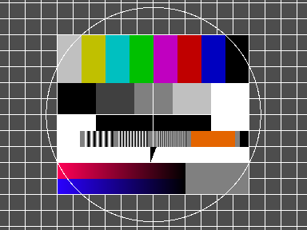
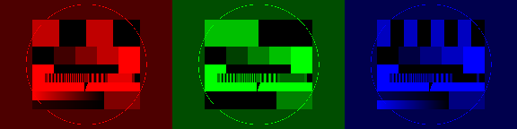
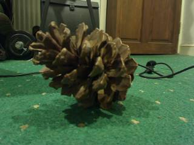

The I/O modules provide sources (and sinks) for video and audio data.
An image can be read from disk using read-image which uses the ImageMagick library to load the image.

Using colourspace conversions one can convert images to gray scale.
write-image writes an image to disk.
(use-modules (aiscm core) (aiscm magick))
(write-image (arr (32 255 96 255) (255 160 255 224)) "pattern.png")As shown above, you can display images under XOrg using the method show:
The size of the window is the size of the image by default. To override it, one can use the shape keyword argument.
(use-modules (aiscm magick) (aiscm xorg) (aiscm core))
(show (read-image "fubk.png") #:shape '(576 768))One can also display a list of images:

(use-modules (aiscm magick) (aiscm xorg) (aiscm core))
(define img (read-image "fubk.png"))
(show (list (* (rgb 1 0 0) img) (* (rgb 0 1 0) img) (* (rgb 0 0 1) img)))The fullscreen keyword can be used to open a borderless maximized window.
(use-modules (aiscm magick) (aiscm xorg) (aiscm core))
(show (read-image "fubk.png") #:fullscreen #t)It is also possible to display a video using the show method:
(use-modules (oop goops) (aiscm v4l2) (aiscm xorg) (aiscm core))
(define v (make <v4l2>))
(show (lambda _ (read-image v)))
(destroy v)One can use the shape keyword argument to customise the window size.
(use-modules (oop goops) (aiscm v4l2) (aiscm xorg) (aiscm core))
(define v (make <v4l2>))
(show (lambda _ (read-image v)) #:shape '(576 768))
(destroy v)A function returning lists of images can be used to display multiple videos synchronously.
The fullscreen keyword can be used to display a video in a borderless maximized window.
(use-modules (oop goops) (aiscm v4l2) (aiscm xorg) (aiscm core))
(define v (make <v4l2>))
(show (lambda _ (read-image v)) #:fullscreen #t)
(destroy v)(use-modules (oop goops) (aiscm v4l2) (aiscm core) (aiscm image) (aiscm xorg))
(define v (make <v4l2>))
(show (lambda _ (let [(img (from-image (read-image v)))] (list (red img) (green img) (blue img)))))
(destroy v)If necessary, one can also handle the display and window objects directly. Possible types of output are IO-XIMAGE, IO-OPENGL, and IO-XVIDEO. The following example shows showing, hiding, moving, resizing of windows. process-events needs to be invoked to process pending events.
(use-modules (oop goops) (aiscm v4l2) (aiscm xorg) (aiscm core))
(define v (make <v4l2>))
(define d (make <xdisplay> #:name ":0.0"))
(define w (make <xwindow> #:display d #:shape '(480 640) #:io IO-XVIDEO))
(title= w "Test")
(define (wait)
(while (not (quit? d)) (write-image (read-image v) w) (process-events d))
(quit= d #f))
(show w)
(wait)
(move w 20 40)
(wait)
(resize w 240 320)
(wait)
(move-resize w 30 60 360 480)
(wait)
(show-fullscreen w)
(wait)
(show w)
(wait)
(hide w)
(destroy d)
(destroy v)
As shown above already, you can open a camera and grab a frame as follows.
(use-modules (oop goops) (aiscm v4l2) (aiscm core))
(define v (make <v4l2>))
(read-image v)
; #<<image> YUY2 (640 480)>
(destroy v)It is also possible to specify the device, a channel, and a closure for selecting the video mode.
(use-modules (oop goops) (ice-9 rdelim) (aiscm v4l2) (aiscm core))
(define (select formats)
(for-each (lambda (i mode) (format #t "~a: ~a~%" i mode))
(iota (length formats))
formats)
(format #t "> ") (list-ref formats (string->number (read-line (current-input-port)))))
(define v (make <v4l2> #:device "/dev/video0" #:channel 0 #:select select))
(read-image v)
(destroy v)The following example program creates a sine wave and outputs it to the audio device.
(use-modules (oop goops) (aiscm pulse) (aiscm core))
(define sine (map (lambda (t) (inexact->exact (round (* (sin (/ (* t 1000 2 3.1415926) 44100)) 20000)))) (iota 441)))
(define samples (to-array <sint> sine))
(define output (make <pulse-play> #:typecode <sint> #:channels 1 #:rate 44100))
(channels output)
;1
(rate output)
;44100
(for-each (lambda _ (write-audio samples output)) (iota 300))
(drain output)The drain method waits for the content of the audio buffer to finish playing. The method flush (not shown here) can be used to empty the audio buffer.
Audio data can be recorded in a similar fashion. The following example records 3 seconds of audio data and then plays it back.
(use-modules (oop goops) (aiscm core) (aiscm pulse))
(define record (make <pulse-record> #:typecode <sint> #:channels 2 #:rate 44100))
(define play (make <pulse-play> #:typecode <sint> #:channels 2 #:rate 44100))
(for-each (lambda _ (write-audio (read-audio record 4410) play)) (iota 30))
(drain play)One can display a block-wise audio spectrum using the Tensorflow Fourier transform.
(use-modules (oop goops) (aiscm core) (aiscm pulse) (aiscm tensorflow) (aiscm xorg))
(define s (make-session))
(define w 400)
(define h 512)
(define sample (tf-placeholder #:dtype <float> #:shape (list 1 h)))
(define vec (tf-reshape sample (to-array <int> (list h))))
(define fourier (tf-rfft vec (to-array <int> (list h))))
(define spectrum (tf-mul (tf-log (tf-add (tf-real (tf-mul fourier (tf-conj fourier))) (tf-cast 1.0 #:DstT <float>))) (tf-cast 32.0 #:DstT <float>)))
(define record (make <pulse-record> #:typecode <float> #:channels 1 #:rate 11025))
(define ramp (* (indices h) (/ 2.0 h)))
(define window (to-type <float> (minor ramp (- 2.0 ramp))))
(define x 0)
(define img (fill <ubyte> (list (1+ (/ h 2)) w) 0))
(show
(lambda _
(let [(spec (run s (list (cons sample (* window (read-audio record h)))) spectrum))]
(set img x (list 0 (1+ (/ h 2))) (major (minor 255 spec) 0))
(set! x (modulo (1+ x) w))
img)))The following example shows how to use the FFmpeg interface to open and view a video. The video presentation time stamps are used to display the video at the correct speed. The method latency is used to determine the delay of the audio buffer.
(use-modules (ice-9 format) (aiscm ffmpeg) (aiscm xorg) (aiscm core) (aiscm util))
; Creative commons audio-video sync test video https://www.youtube.com/watch?v=GKBKa9Za-FQ
(define video (open-ffmpeg-input "av-sync.mp4"))
(define time (clock))
(show
(lambda (dsp)
(format #t "video pts = ~8,2f, clock = ~8,2f~%" (video-pts video) (elapsed time))
(synchronise (read-image video) (- (video-pts video) (elapsed time)) (event-loop dsp))))The method pts= can be used to seek to an absolute position in audio/video streams:
(use-modules (aiscm ffmpeg) (aiscm xorg) (aiscm core))
; Creative commons audio-video sync test video https://www.youtube.com/watch?v=GKBKa9Za-FQ
(define video (open-ffmpeg-input "av-sync.mp4"))
(pts= video 15)
(show (read-image video))The FFmpeg bindings can also be used to write a video stream to a file. By default the file format is determined by the file name extension.
(use-modules (oop goops) (aiscm util) (aiscm core) (aiscm v4l2) (aiscm xorg) (aiscm ffmpeg))
(define input (make <v4l2>))
(define output (open-ffmpeg-output (string-append (tmpnam) ".avi") #:shape (shape input) #:frame-rate 10))
(define timer (clock))
(define count 0)
(show
(lambda _
(format #t "actual frame rate = ~a frames/second~%" (/ count (elapsed timer)))
(set! count (1+ count))
(write-image (read-image input) output)))
(destroy output)One can play samples from an audio file by passing them to the audio device using the write-audio method. It is also possible to pass a function returning consecutive audio samples as shown below.
(use-modules (oop goops) (aiscm ffmpeg) (aiscm pulse) (aiscm core))
(define audio (open-ffmpeg-input "test.mp3"))
(define output (make <pulse-play> #:rate (rate audio) #:channels (channels audio) #:typecode (typecode audio)))
(write-audio (lambda _ (read-audio audio (rate audio))) output)
(drain output)One can write audio samples to an audio file. When opening the output file, the sample rate, sample type, and number of channels need to be specified. The following sample creates an audio file of 3 seconds length with a 1000 Hz sine wave.
(use-modules (oop goops) (aiscm ffmpeg) (aiscm core))
(define samples (to-array <sint> (map (lambda (t) (inexact->exact (round (* (sin (/ (* t 1000 2 3.1415926) 44100)) 20000)))) (iota 441))))
(define output (open-ffmpeg-output (string-append (tmpnam) ".mp3") #:rate 44100 #:typecode <sint> #:channels 1))
(for-each (lambda _ (write-audio samples output)) (iota 300))
(destroy output)Video/audio files usually contain a video and an audio stream. The following example displays video frames and plays audio data in a synchronised way.
(use-modules (ice-9 format) (oop goops) (aiscm ffmpeg) (aiscm xorg) (aiscm pulse) (aiscm image) (aiscm util) (aiscm core))
; Creative commons audio-video sync test video https://www.youtube.com/watch?v=GKBKa9Za-FQ
(define video (open-ffmpeg-input "av-sync.mp4"))
(define pulse (make <pulse-play> #:rate (rate video) #:channels (channels video) #:typecode (typecode video) #:latency 0.1))
(show
(lambda (dsp)
(while (< (audio-pts video) (+ (video-pts video) 0.2)) (write-audio (or (read-audio video (/ (rate video) 10)) (break)) pulse))
(format #t "video pts = ~8,2f, audio-pts = ~8,2f, latency = ~8,2f~%" (video-pts video) (audio-pts video) (latency pulse))
(synchronise (read-image video) (- (video-pts video) (- (audio-pts video) (latency pulse))) (event-loop dsp))))
(drain pulse)Note that FFmpeg also supports network streaming of video data. I.e. the following example will play the Sintel short film from a web server.
(use-modules (oop goops) (aiscm ffmpeg) (aiscm xorg) (aiscm pulse) (aiscm image) (aiscm core) (aiscm util))
(define video (open-ffmpeg-input "http://peach.themazzone.com/durian/movies/sintel-1024-surround.mp4"))
(define pulse (make <pulse-play> #:rate (rate video) #:channels (channels video) #:typecode (typecode video) #:latency 0.1))
(show
(lambda (dsp)
(while (< (audio-pts video) (+ (video-pts video) 0.2)) (write-audio (or (read-audio video (/ (rate video) 10)) (break)) pulse))
(synchronise (read-image video) (- (video-pts video) (- (audio-pts video) (latency pulse))) (event-loop dsp))))
(drain pulse)When recording video and audio, the methods write-image and write-audio are used to write video frames and audio samples. The following example records video frames using Video4Linux2 and audio samples using Pulse audio.
(use-modules (oop goops) (aiscm ffmpeg) (aiscm v4l2) (aiscm pulse) (aiscm xorg) (aiscm core))
(define input (make <v4l2>))
(define output (open-ffmpeg-output (string-append (tmpnam) ".avi")
#:shape (shape input) #:frame-rate 7 #:rate 44100 #:typecode <sint> #:channels 2))
(define record (make <pulse-record> #:typecode <sint> #:channels 2 #:rate 44100))
(show
(lambda _
(write-audio (read-audio record (/ (rate output) (frame-rate output))) output)
(write-image (read-image input) output)))
(destroy output)